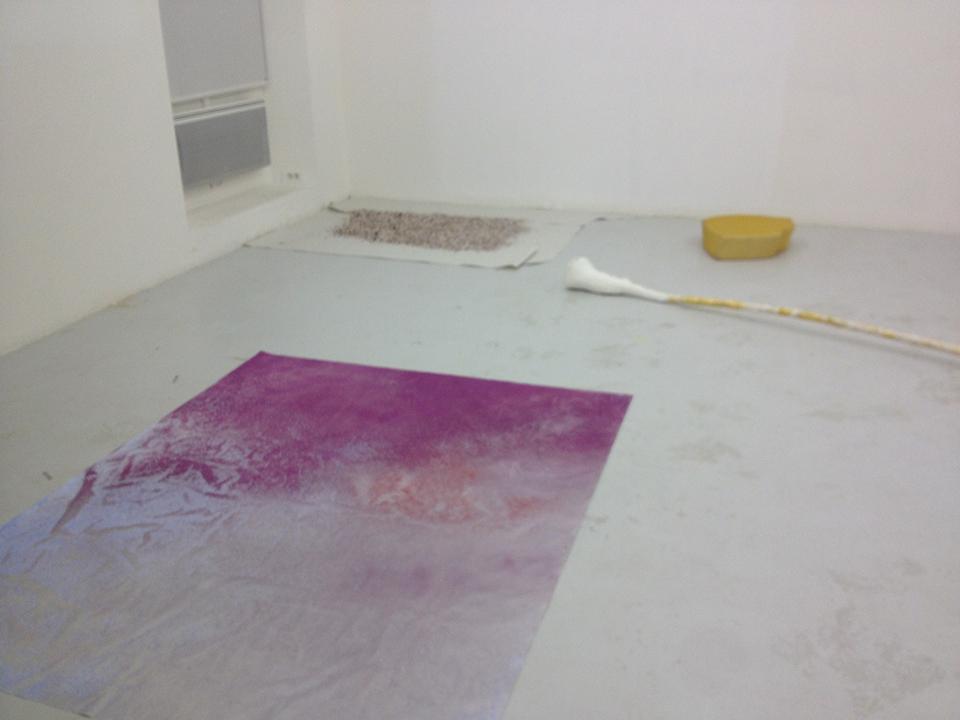
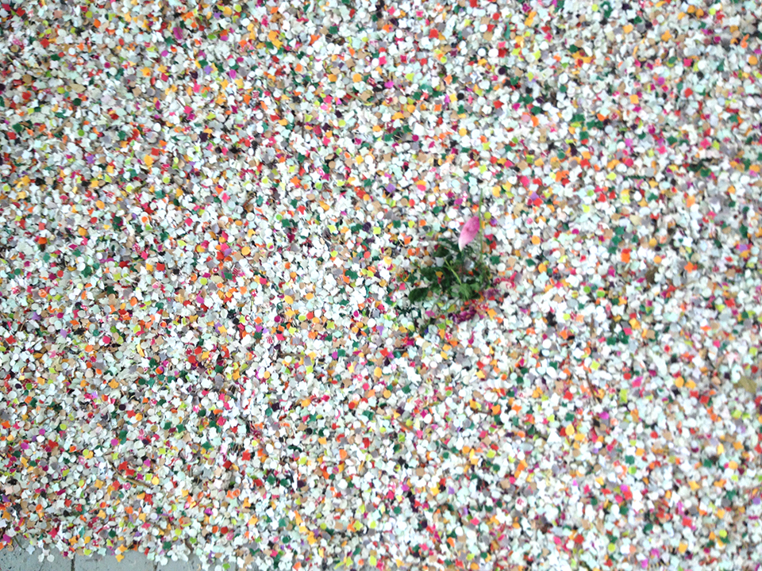
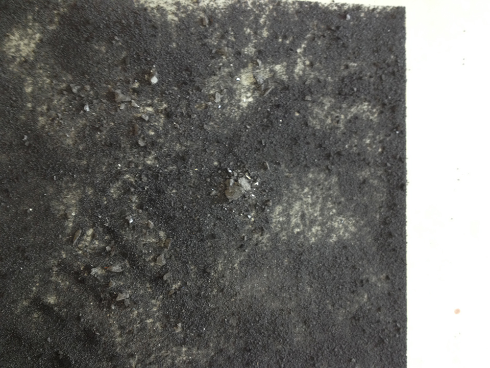
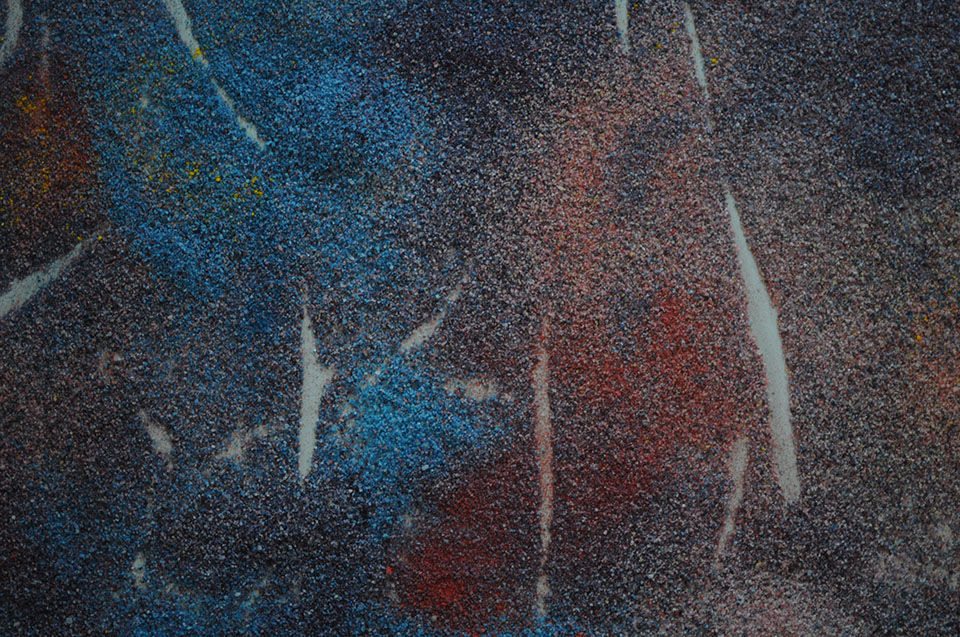
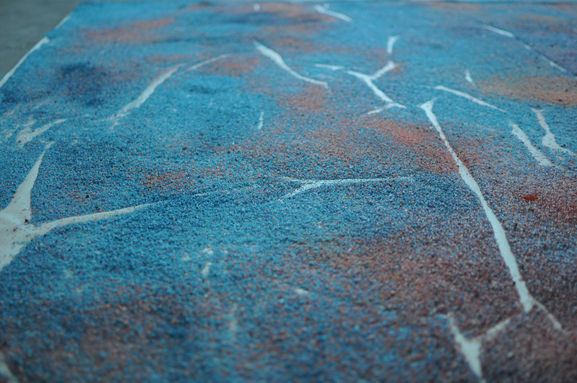
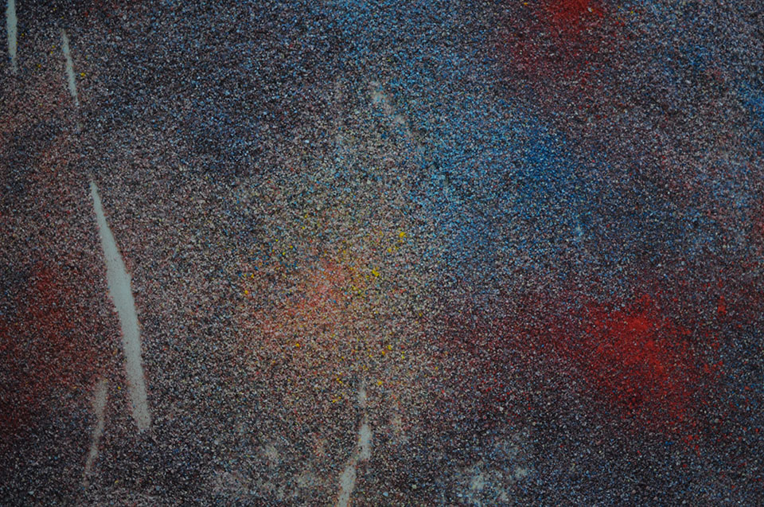
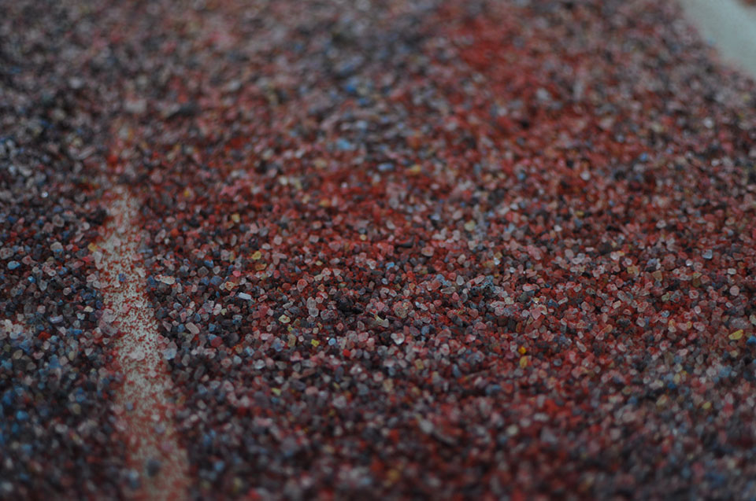
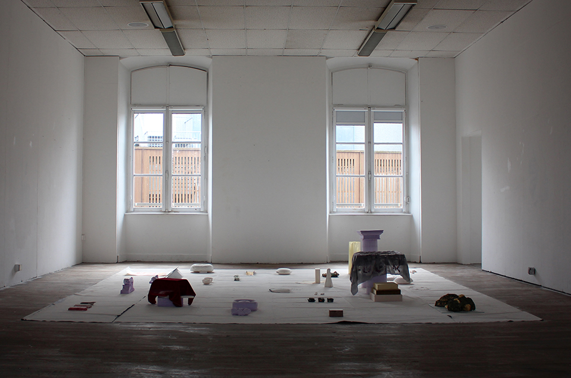
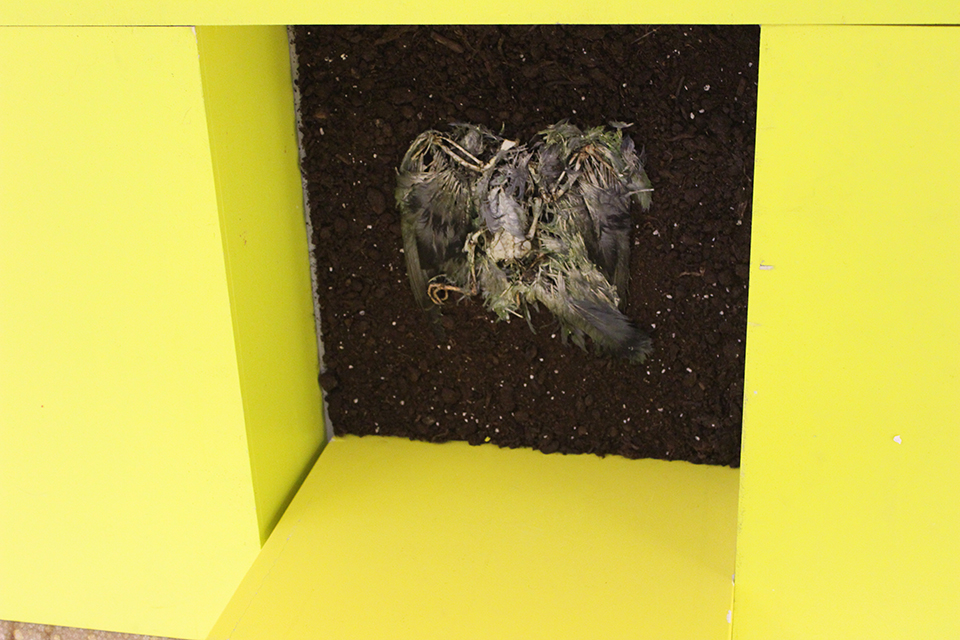

DELPHINE BERTRAND


Le chercheur d'or
Fleurs fraîches, plâtre, tissus, or en paillettes, texte imprimé sur feuillet
&Étendue n°5
Sels colorés
Vues de l'exposition du DNSEP, ÉESAB Quimper
Juin 2018

Étendue n°1
Sels colorés
Vue d'atelier
Décembre 2017


Nature morte à confettis de fête
Confettis usagés, fleur sèche
Vues de l'exposition du DNSEP, ÉESAB Quimper
Juin 2018

Sans titre
Sels colorés
Vues de l'exposition du DNSEP, ÉESAB Quimper
Juin 2018




Étendue n°2
Sels colorés
Détails, vues de l'exposition A salmon in the river,
ÉESAB Quimper
Décembre 2017

Sans titre
Installation à la manière d'un jardin japonnais
Plâtre et sculptures
ÉESAB Quimper
Février 2016

Coffin for pigeon
Détail d'une installation
Terre, carcasse de pigeon, socles jaunes
ÉESAB Quimper
Décembre 2015